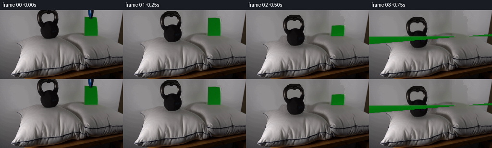
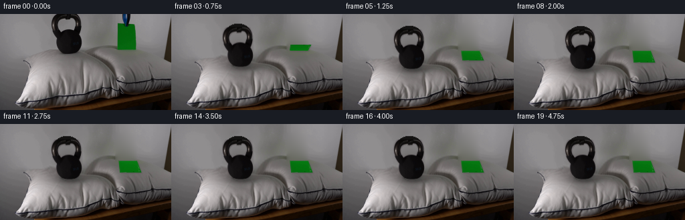
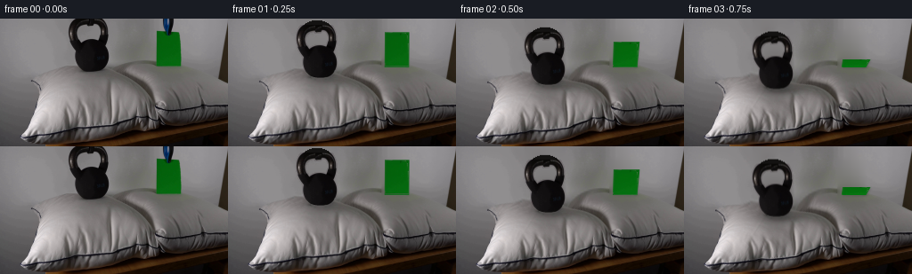
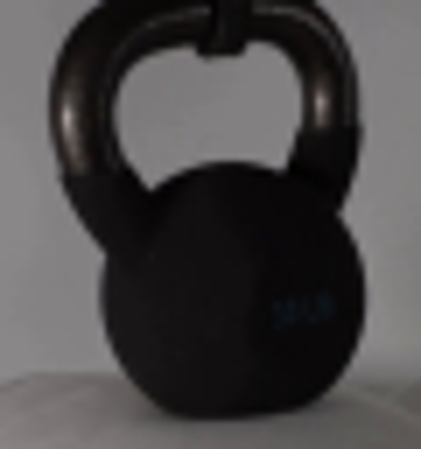
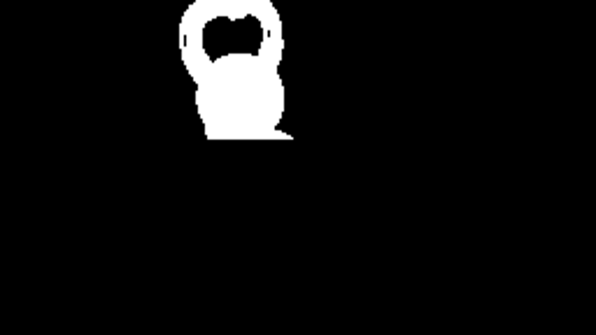
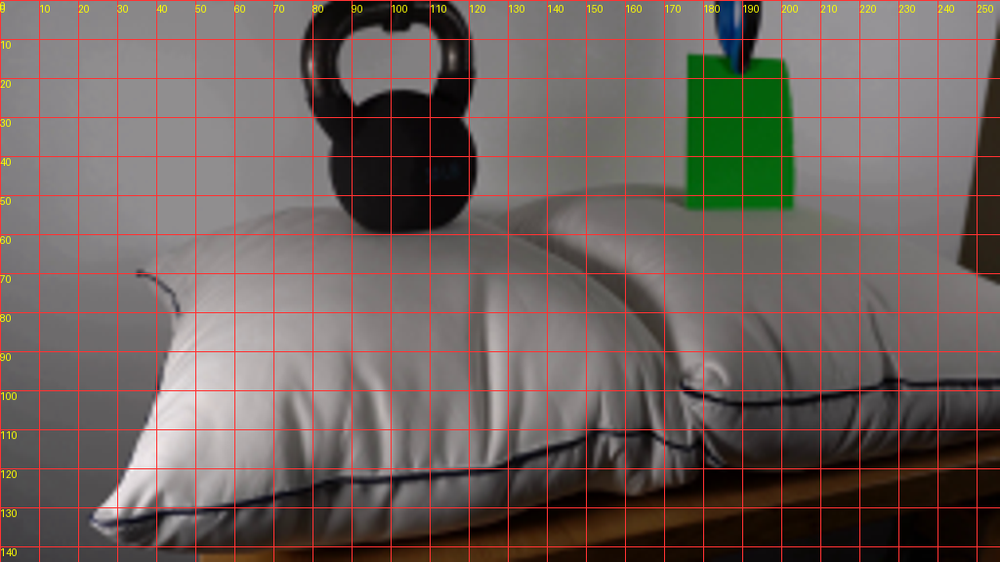
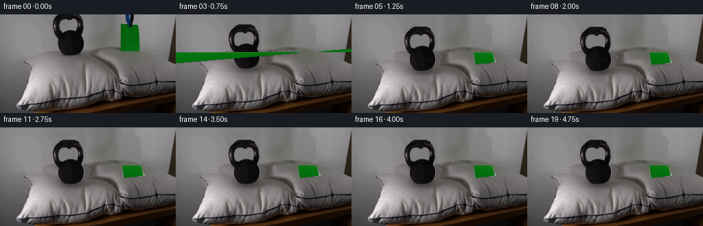
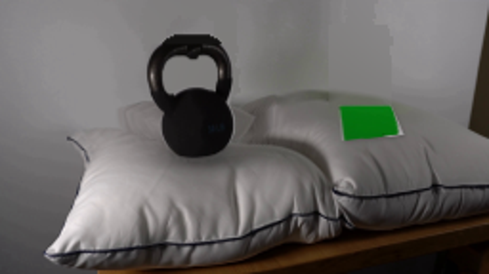
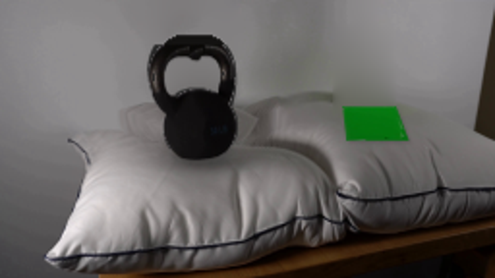
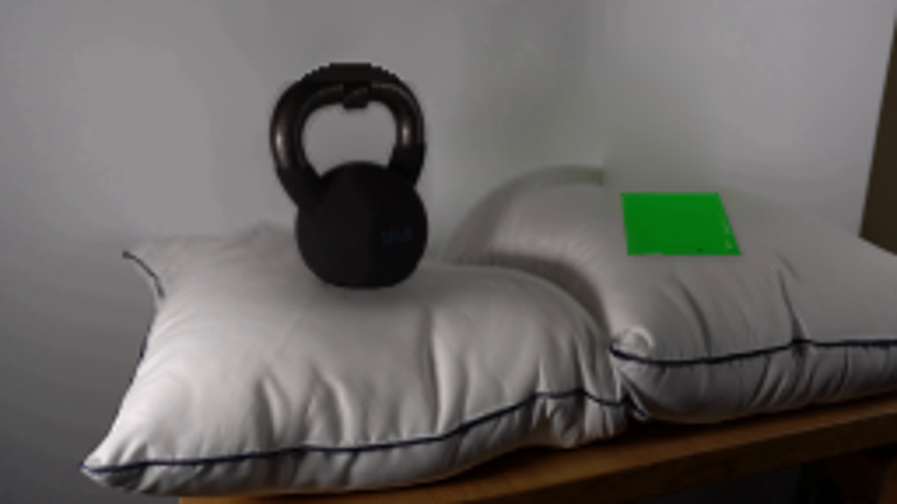

CODING AGENTS AS PIXEL WORLD MODELS
traex/GPT-6.1-Sol · 0193
点击播放 · 原生 RGB 像素
逐轮保存的候选
回放视频、检查图与代码变化。
每份候选均可单独播放。实际图片检查记录在下方工具轨迹中。
候选 01播放与检查图
点击播放 · 原生 RGB 像素


展开代码变化
--- 上一保存版本
+++ 本次保存版本
@@ -0,0 +1,177 @@
+from pathlib import Path
+import numpy as np
+from PIL import Image, ImageDraw
+import cv2
+from scipy.ndimage import gaussian_filter
+import artifact_io
+
+ROOT=Path(__file__).resolve().parent
+H,W=144,256
+original=np.asarray(Image.open(ROOT/'first_frame.png').convert('RGB'))
+yy,xx=np.mgrid[:H,:W].astype(np.float32)
+
+def path_mask(segments, scale=4):
+ # A small cubic-path rasterizer, in image coordinates.
+ im=Image.new('L',(W*scale,H*scale),0)
+ pts=[]; p=None
+ for s in segments:
+ if len(s)==2:
+ p=np.array(s,dtype=float);pts.append(tuple(p*scale))
+ else:
+ a=p.copy();b=np.array(s[:2]);c=np.array(s[2:4]);d=np.array(s[4:6])
+ for t in np.linspace(0,1,25)[1:]:
+ v=(1-t)**3*a+3*(1-t)**2*t*b+3*(1-t)*t*t*c+t**3*d
+ pts.append(tuple(v*scale))
+ p=d
+ ImageDraw.Draw(im).polygon(pts,fill=255)
+ return np.asarray(im.resize((W,H),Image.Resampling.LANCZOS),dtype=np.float32)/255
+
+# Silhouettes isolate the actual objects, not the shadows underneath them.
+kouter=path_mask([(85,-4),(77,0,75,11,77.5,21),(79,29,82,33,86,36),(82,46,87,57,94,59),(101,60.6,111,60,116,56),(125,50,124,38,120,32),(123,23,123,9,119,3),(116,-2,111,-4,105,-4)])
+kinner=path_mask([(90,7),(85,9,84,18,86,23),(87,26,89,27,90,26),(94,22,104,21,110,24),(113,25,113,26,113,22),(115,16,114,9,110,7),(108,6,106,6,104,6),(104,9,100,9,98,7),(96,6,92,6,90,7)])
+km=np.maximum(0,kouter-kinner)
+pm=path_mask([(175.5,14),(182,14,195,15,201.5,15),(202.8,19,203,36,203,53.6),(195,54,183,54,175.5,53.8)])
+clipm=path_mask([(183.1,-2),(194.5,-2),(194,5,193,14,190,18.5),(186.3,20,183,9,183.1,-2)])
+allmask=np.maximum.reduce([km,pm,clipm])
+remove=np.uint8(allmask>0.015)*255
+remove=cv2.dilate(remove,np.ones((3,3),np.uint8))
+base=cv2.inpaint(original,remove,5,cv2.INPAINT_TELEA).astype(np.float32)
+
+# Reconstruct the uninterrupted softly lit wall behind the suspended props.
+# A low-order smooth surface fitted only to observed wall pixels.
+wall_edge=54-7*np.exp(-((xx-155)/40)**2)+9*np.exp(-((xx-42)/27)**2)
+wall=(yy < wall_edge-3)&(xx<246)&(remove==0)
+features=np.stack([np.ones_like(xx),xx/256,yy/144,(xx/256)**2,(yy/144)**2,xx*yy/(256*144)],-1)
+fit=np.linalg.lstsq(features[wall],original[wall].astype(float),rcond=None)[0]
+wall_color=features@fit
+wall_alpha=np.clip((wall_edge-yy)/3,0,1)*(remove>0)
+base=base*(1-wall_alpha[...,None])+wall_color*wall_alpha[...,None]
+
+# Remove a small contact shadow which would otherwise remain above the new position.
+# It is largely carried down by the cushion deformation below.
+
+# Source kettle texture; the few pixels beyond the upper edge complete the handle arc.
+pad=8
+ktex=np.zeros((H+pad,W,3),np.float32)
+kalp=np.zeros((H+pad,W),np.float32)
+ktex[pad:]=original
+kalp[pad:]=km
+# Draw the unseen, very small top rim of the same handle.
+for sy in range(-6,0):
+ for sx in range(77,124):
+ r=((sx-100)/22)**2+((sy-13)/20)**2
+ if r<1 and sy>=-5:
+ ktex[sy+pad,sx]=[19,18,17]
+ kalp[sy+pad,sx]=1
+# Black hanging support at center is replaced by the curved metal top when lowered.
+for sy in range(0,7):
+ for sx in range(98,105):
+ if km[sy,sx]>.3:
+ ktex[sy+pad,sx]=original[sy,max(78,sx-10)]
+kalpha=kalp
+kpremul=ktex*kalp[...,None]
+
+# Prepared small paper texture. The clip's overlapping tip is healed green.
+paper=original[14:55,175:204].copy()
+for py in range(6):
+ for px in range(29):
+ if 8<px<18:
+ paper[py,px]=original[17+py,179]
+paper=paper.astype(np.float32)
+pa=np.ones(paper.shape[:2],np.float32)
+pa[0,:]=.8;pa[-1,:]=.8;pa[:,0]=.8;pa[:,-1]=.8
+
+
+def over(bg,col,alpha):
+ return bg*(1-alpha[...,None])+col*alpha[...,None]
+
+
+def scene(t):
+ # A heavy supported mass is let down onto the cushion. The critically
+ # damped response includes only a small rebound of the fabric stuffing.
+ s=max(t-0.04,0)
+ displacement=23.2*(1-(1+4.8*s)*np.exp(-4.8*s))
+ displacement+=1.35*np.exp(-2.1*s)*np.sin(7.4*s)
+ displacement=max(0,displacement)
+
+ # Warp the original pillow fabric, including its seam and folds. The
+ # deformation is localized to the left pillow; its lower corners stay put.
+ # Analytic forward field followed by a fixed-point inverse.
+ def shift(x,y):
+ horizontal=np.exp(-((x-102)/46)**2)
+ pillow_gate=np.clip((y-46)/10,0,1)
+ bottom_gate=np.clip((143-y)/11,0,1)
+ falloff=.16+.84*np.exp(-((y-60)/41)**2)
+ dy=displacement*horizontal*pillow_gate*falloff*bottom_gate
+ # Cloth pulls inward around the lower part of the weighted sphere.
+ dx=-2.0*(displacement/23.2)*np.tanh((x-102)/25)*horizontal*np.exp(-((y-76)/26)**2)*pillow_gate
+ return dx,dy
+ mx=xx.copy();my=yy.copy()
+ for _ in range(12):
+ dx,dy=shift(mx,my);mx=xx-dx;my=yy-dy
+ frame=cv2.remap(base,mx.astype(np.float32),my.astype(np.float32),cv2.INTER_CUBIC,borderMode=cv2.BORDER_REFLECT)
+
+ # Soft occlusion around the contact dimple and shallow radial cloth creases.
+ amount=displacement/23.2
+ cy=59+displacement
+ shadow=np.exp(-((xx-103)/20)**2-((yy-cy-1.7)/4.0)**2)*.25*amount
+ frame*=1-shadow[...,None]
+ bowl=np.exp(-((xx-104)/28)**2-((yy-cy+3)/8)**2)*.065*amount
+ frame*=1-bowl[...,None]
+ # Fold pairs originate at the sunk base, fade into existing fabric shading.
+ for side in [-1,1]:
+ z=(yy-cy)/23
+ mid=104+side*(13+15*np.maximum(z,0))
+ amp=.04*amount*np.exp(-((yy-cy-11)/15)**2)*(yy>cy)
+ crease=np.exp(-((xx-mid)/1.2)**2)*amp
+ light=np.exp(-((xx-mid-side*2.0)/1.9)**2)*amp*.65
+ frame*=1-crease[...,None]+light[...,None]
+
+ # Rigid kettle keeps its size and shape while sinking; it does not squash.
+ # Its movement matches the pillow at the original contact point.
+ kettle_y=displacement
+ kx=xx.astype(np.float32)
+ ky=(yy-kettle_y+pad).astype(np.float32)
+ a=cv2.remap(kalpha,kx,ky,cv2.INTER_LINEAR,borderMode=cv2.BORDER_CONSTANT)
+ c=cv2.remap(kpremul,kx,ky,cv2.INTER_LINEAR,borderMode=cv2.BORDER_CONSTANT)
+ frame=frame*(1-a[...,None])+c
+
+ # The light sheet pivots gently forward about the edge already near the
+ # right pillow, coming to rest flat without compressing that pillow.
+ p=max(t-.12,0)
+ theta=(np.pi/2)*(1-np.exp(-(p/.54)**2))
+ flutter=.6*np.exp(-1.9*p)*np.sin(8*p)
+ shiftx=1.6*(np.sin(theta)**2)
+ bottom_left=np.array([175.5+shiftx,54.0+.8*np.sin(theta)])
+ bottom_right=np.array([202.5+shiftx,54.0+.8*np.sin(theta)])
+ # When flat, its distant edge is the original bottom edge; the free edge
+ # lies toward the viewer on the fabric.
+ edgeY=54-40*np.cos(theta)+18*np.sin(theta)
+ left_free=[175.5+shiftx+2*np.sin(theta)+flutter,edgeY+1.2*np.sin(theta)]
+ right_free=[202.0+shiftx+7*np.sin(theta)+flutter,edgeY-1.6*np.sin(theta)]
+ src=np.float32([[0,0],[28,0],[28,40],[0,40]])
+ dest=np.float32([left_free,right_free,bottom_right,bottom_left])
+ M=cv2.getPerspectiveTransform(src,dest)
+ pap_a=cv2.warpPerspective(pa,M,(W,H),flags=cv2.INTER_LINEAR)
+ pap_col=cv2.warpPerspective(paper*pa[...,None],M,(W,H),flags=cv2.INTER_LINEAR)
+ # Flat paper is diffusely lit by the same overhead light as the fabric.
+ pap_col*=1+.16*np.sin(theta)
+ if theta>.08:
+ sh=cv2.GaussianBlur(pap_a,(0,0),1.0)
+ sh=cv2.warpAffine(sh,np.float32([[1,0,1],[0,1,1.1]]),(W,H))
+ frame*=1-(.16*np.sin(theta)*sh)[...,None]
+ frame=frame*(1-pap_a[...,None])+pap_col
+
+ # The paper's blue suspension retracts as the objects are released.
+ lift=50*(1-np.exp(-max(t-.03,0)*3.0))
+ clip_a=cv2.remap(clipm,xx,(yy+lift).astype(np.float32),cv2.INTER_LINEAR,borderMode=cv2.BORDER_CONSTANT)
+ clip_col=cv2.remap(original.astype(np.float32)*clipm[...,None],xx,(yy+lift).astype(np.float32),cv2.INTER_LINEAR,borderMode=cv2.BORDER_CONSTANT)
+ frame=frame*(1-clip_a[...,None])+clip_col
+ return np.clip(np.rint(frame),0,255).astype(np.uint8)
+
+
+def main():
+ frames=np.stack([original if i==0 else scene(i/4) for i in range(20)])
+ artifact_io.save(frames,ROOT)
+
+if __name__=='__main__':main()
候选 02播放与检查图
点击播放 · 原生 RGB 像素

展开代码变化
--- 上一保存版本
+++ 本次保存版本
@@ -3,6 +3,8 @@
from PIL import Image, ImageDraw
import cv2
from scipy.ndimage import gaussian_filter
+from scipy.sparse import coo_matrix
+from scipy.sparse.linalg import spsolve
import artifact_io
ROOT=Path(__file__).resolve().parent
@@ -35,17 +37,27 @@
allmask=np.maximum.reduce([km,pm,clipm])
remove=np.uint8(allmask>0.015)*255
remove=cv2.dilate(remove,np.ones((3,3),np.uint8))
-base=cv2.inpaint(original,remove,5,cv2.INPAINT_TELEA).astype(np.float32)
-
-# Reconstruct the uninterrupted softly lit wall behind the suspended props.
-# A low-order smooth surface fitted only to observed wall pixels.
-wall_edge=54-7*np.exp(-((xx-155)/40)**2)+9*np.exp(-((xx-42)/27)**2)
-wall=(yy < wall_edge-3)&(xx<246)&(remove==0)
-features=np.stack([np.ones_like(xx),xx/256,yy/144,(xx/256)**2,(yy/144)**2,xx*yy/(256*144)],-1)
-fit=np.linalg.lstsq(features[wall],original[wall].astype(float),rcond=None)[0]
-wall_color=features@fit
-wall_alpha=np.clip((wall_edge-yy)/3,0,1)*(remove>0)
-base=base*(1-wall_alpha[...,None])+wall_color*wall_alpha[...,None]
+# Harmonic interpolation uses only the known surrounding pixels to recover
+# the wall and the cushion behind each silhouette, without hard patch edges.
+unknown=remove>0
+coords=np.argwhere(unknown)
+ids=np.full((H,W),-1,np.int32)
+ids[unknown]=np.arange(len(coords))
+rows=[];cols=[];vals=[]
+rhs=np.zeros((len(coords),3),np.float64)
+for i,(y,x) in enumerate(coords):
+ degree=0
+ for dy,dx in [(0,1),(0,-1),(1,0),(-1,0)]:
+ ny,nx=y+dy,x+dx
+ if 0<=ny<H and 0<=nx<W:
+ degree+=1
+ if unknown[ny,nx]:
+ rows.append(i);cols.append(ids[ny,nx]);vals.append(-1)
+ else:rhs[i]+=original[ny,nx]
+ rows.append(i);cols.append(i);vals.append(degree)
+mat=coo_matrix((vals,(rows,cols)),shape=(len(coords),len(coords))).tocsr()
+base=original.astype(np.float32).copy()
+base[unknown]=spsolve(mat,rhs)
# Remove a small contact shadow which would otherwise remain above the new position.
# It is largely carried down by the cushion deformation below.
@@ -55,6 +67,10 @@
ktex=np.zeros((H+pad,W,3),np.float32)
kalp=np.zeros((H+pad,W),np.float32)
ktex[pad:]=original
+# Edge pixels are unmixed from the light backdrop for clean silhouettes.
+gray=original.mean(axis=2)
+edge_dark=(gray>100)&(km>.01)
+ktex[pad:][edge_dark]=np.minimum(ktex[pad:][edge_dark],40)
kalp[pad:]=km
# Draw the unseen, very small top rim of the same handle.
for sy in range(-6,0):
@@ -77,6 +93,12 @@
for px in range(29):
if 8<px<18:
paper[py,px]=original[17+py,179]
+# Extrapolate the green material to the sampled texture boundary, eliminating
+# pale pillow or wall pixels at its antialiased edges.
+for py in range(paper.shape[0]):
+ for px in range(paper.shape[1]):
+ if not (paper[py,px,1]>paper[py,px,0]*1.7 and paper[py,px,1]>paper[py,px,2]*1.7):
+ paper[py,px]=original[min(51,17+py),181]
paper=paper.astype(np.float32)
pa=np.ones(paper.shape[:2],np.float32)
pa[0,:]=.8;pa[-1,:]=.8;pa[:,0]=.8;pa[:,-1]=.8
@@ -147,14 +169,18 @@
# When flat, its distant edge is the original bottom edge; the free edge
# lies toward the viewer on the fabric.
edgeY=54-40*np.cos(theta)+18*np.sin(theta)
- left_free=[175.5+shiftx+2*np.sin(theta)+flutter,edgeY+1.2*np.sin(theta)]
- right_free=[202.0+shiftx+7*np.sin(theta)+flutter,edgeY-1.6*np.sin(theta)]
+ left_free=[175.5+shiftx+2*np.sin(theta)+flutter,edgeY]
+ right_free=[202.0+shiftx+7*np.sin(theta)+flutter,edgeY]
src=np.float32([[0,0],[28,0],[28,40],[0,40]])
dest=np.float32([left_free,right_free,bottom_right,bottom_left])
M=cv2.getPerspectiveTransform(src,dest)
pap_a=cv2.warpPerspective(pa,M,(W,H),flags=cv2.INTER_LINEAR)
pap_col=cv2.warpPerspective(paper*pa[...,None],M,(W,H),flags=cv2.INTER_LINEAR)
# Flat paper is diffusely lit by the same overhead light as the fabric.
+ bounds=np.zeros((H,W),np.uint8)
+ cv2.fillConvexPoly(bounds,np.round(dest*4).astype(np.int32),255,shift=2,lineType=cv2.LINE_AA)
+ clip=bounds.astype(np.float32)/255
+ pap_a*=clip;pap_col*=clip[...,None]
pap_col*=1+.16*np.sin(theta)
if theta>.08:
sh=cv2.GaussianBlur(pap_a,(0,0),1.0)
候选 03播放与检查图
候选 04播放与检查图
点击播放 · 原生 RGB 像素

展开代码变化
--- 上一保存版本
+++ 本次保存版本
@@ -32,6 +32,23 @@
kouter=path_mask([(85,-4),(77,0,75,11,77.5,21),(79,29,82,33,86,36),(82,46,87,57,94,59),(101,60.6,111,60,116,56),(125,50,124,38,120,32),(123,23,123,9,119,3),(116,-2,111,-4,105,-4)])
kinner=path_mask([(90,7),(85,9,84,18,86,23),(87,26,89,27,90,26),(94,22,104,21,110,24),(113,25,113,26,113,22),(115,16,114,9,110,7),(108,6,106,6,104,6),(104,9,100,9,98,7),(96,6,92,6,90,7)])
km=np.maximum(0,kouter-kinner)
+# Recover the observed silhouette accurately from its dark cast iron color.
+g=original.astype(np.float32).mean(axis=2)
+roi=np.zeros((H,W),np.uint8)
+roi[:53,75:124]=1
+b=np.uint8((g<112)&(roi>0))*255
+n,lab,stats,_=cv2.connectedComponentsWithStats(255-b)
+for i in range(1,n):
+ if stats[i,cv2.CC_STAT_AREA]<20:b[lab==i]=255
+bw=b.astype(np.float32)/255
+outer=cv2.dilate(b,np.ones((3,3),np.uint8))>0
+edge=cv2.distanceTransform(b,cv2.DIST_L2,3)<1.5
+alpha=np.clip((138-g)/112,0,1)
+truealpha=np.where(edge,alpha,bw)*outer
+km[:51]=truealpha[:51]
+# The body meets the fabric in a rounded, narrow contact area.
+bodybottom=path_mask([(86,50),(120,50),(118,57,113,59,107,59.3),(98,60,92,58,90,55),(88,53,87,52,86,50)])
+km[51:]=bodybottom[51:]
pm=path_mask([(175.5,14),(182,14,195,15,201.5,15),(202.8,19,203,36,203,53.6),(195,54,183,54,175.5,53.8)])
clipm=path_mask([(183.1,-2),(194.5,-2),(194,5,193,14,190,18.5),(186.3,20,183,9,183.1,-2)])
allmask=np.maximum.reduce([km,pm,clipm])
@@ -69,13 +86,14 @@
ktex[pad:]=original
# Edge pixels are unmixed from the light backdrop for clean silhouettes.
gray=original.mean(axis=2)
-edge_dark=(gray>100)&(km>.01)
-ktex[pad:][edge_dark]=np.minimum(ktex[pad:][edge_dark],40)
+edge_dark=(km>.001)&(km<.98)
+background=np.full_like(original,138,dtype=np.float32)
+ktex[pad:][edge_dark]=np.clip((original.astype(np.float32)[edge_dark]-background[edge_dark]*(1-km[edge_dark,None]))/km[edge_dark,None],0,255)
kalp[pad:]=km
# Draw the unseen, very small top rim of the same handle.
for sy in range(-6,0):
for sx in range(77,124):
- r=((sx-100)/22)**2+((sy-13)/20)**2
+ r=((sx-99.5)/22.2)**2+((sy-14)/19.8)**2
if r<1 and sy>=-5:
ktex[sy+pad,sx]=[19,18,17]
kalp[sy+pad,sx]=1
@@ -161,7 +179,7 @@
# The light sheet pivots gently forward about the edge already near the
# right pillow, coming to rest flat without compressing that pillow.
p=max(t-.12,0)
- theta=(np.pi/2)*(1-np.exp(-(p/.54)**2))
+ theta=(np.pi/2)*(1-np.exp(-(p/.65)**2))
flutter=.6*np.exp(-1.9*p)*np.sin(8*p)
shiftx=1.6*(np.sin(theta)**2)
bottom_left=np.array([175.5+shiftx,54.0+.8*np.sin(theta)])
候选 05播放与检查图
点击播放 · 原生 RGB 像素


展开代码变化
--- 上一保存版本
+++ 本次保存版本
@@ -147,8 +147,16 @@
dx=-2.0*(displacement/23.2)*np.tanh((x-102)/25)*horizontal*np.exp(-((y-76)/26)**2)*pillow_gate
return dx,dy
mx=xx.copy();my=yy.copy()
- for _ in range(12):
- dx,dy=shift(mx,my);mx=xx-dx;my=yy-dy
+ for outer_step in range(3):
+ lo=yy-displacement-3;hi=yy+3
+ for _ in range(20):
+ mid=(lo+hi)*.5
+ dx,dy=shift(mx,mid)
+ below=mid+dy<yy
+ lo=np.where(below,mid,lo);hi=np.where(below,hi,mid)
+ my=(lo+hi)*.5
+ dx,dy=shift(mx,my)
+ mx=xx-dx
frame=cv2.remap(base,mx.astype(np.float32),my.astype(np.float32),cv2.INTER_CUBIC,borderMode=cv2.BORDER_REFLECT)
# Soft occlusion around the contact dimple and shallow radial cloth creases.
可观测工具轨迹
实际执行的命令与返回图片。
命令 1exit 0
/bin/bash -lc "ls -la && cat prompt.txt && printf '\\n---RULES---\\n' && cat GENERATION_RULES.md"
命令 2exit 0
/bin/bash -lc "cat artifact_io.py && python - <<'PY'
from PIL import Image
im=Image.open('first_frame.png');print(im.size);im.resize((1024,576)).save('.tmp/first_large.png')
PY"命令 3exit 0
/bin/bash -lc "python - <<'PY'
import importlib.util
for x in ['cv2','numpy','scipy','PIL']:
print(x, bool(importlib.util.find_spec(x)))
from PIL import Image
im=Image.open('first_frame.png');im.crop((70,0,130,64)).resize((600,640)).save('.tmp/kettle.png')
PY"命令 4exit 0
/bin/bash -lc "python - <<'PY'
from PIL import Image
import numpy as np,cv2
im=np.array(Image.open('first_frame.png'))
g=cv2.cvtColor(im,cv2.COLOR_RGB2GRAY)
m=np.zeros((144,256),np.uint8);m[:60,75:126]=(g[:60,75:126]<95).astype('uint8')*255
n,l,st,c=cv2.connectedComponentsWithStats(m)
mask=np.uint8(l==1)*255
# inspect
Image.fromarray(mask).resize((1024,576)).save('.tmp/mask.png')
print(st)
PY"命令 5exit 0
/bin/bash -lc "python - <<'PY'
from PIL import Image,ImageDraw
im=Image.open('first_frame.png').resize((1024,576));d=ImageDraw.Draw(im)
for x in range(0,256,10):
d.line((x*4,0,x*4,576),fill=(255,50,50),width=1);d.text((x*4,3),str(x),fill=(255,255,0))
for y in range(0,144,10):
d.line((0,y*4,1024,y*4),fill=(255,50,50),width=1);d.text((0,y*4),str(y),fill=(255,255,0))
im.save('.tmp/grid.png')
PY"命令 6exit 0
/bin/bash -lc "cat > generate.py <<'PY'
from pathlib import Path
import numpy as np
from PIL import Image, ImageDraw
import cv2
from scipy.ndimage import gaussian_filter
import artifact_io
ROOT=Path(__file__).resolve().parent
H,W=144,256
original=np.asarray(Image.open(ROOT/'first_frame.png').convert('RGB'))
yy,xx=np.mgrid[:H,:W].astype(np.float32)
def path_mask(segments, scale=4):
# A small cubic-path rasterizer, in image coordinates.
im=Image.new('L',(W*scale,H*scale),0)
pts=[]; p=None
for s in segments:
if len(s)==2:
p=np.array(s,dtype=float);pts.append(tuple(p*scale))
else:
a=p.copy();b=np.array(s[:2]);c=np.array(s[2:4]);d=np.array(s[4:6])
for t in np.linspace(0,1,25)[1:]:
v=(1-t)**3*a+3*(1-t)**2*t*b+3*(1-t)*t*t*c+t**3*d
pts.append(tuple(v*scale))
p=d
ImageDraw.Draw(im).polygon(pts,fill=255)
return np.asarray(im.resize((W,H),Image.Resampling.LANCZOS),dtype=np.float32)/255
# Silhouettes isolate the actual objects, not the shadows underneath them.
kouter=path_mask([(85,-4),(77,0,75,11,77.5,21),(79,29,82,33,86,36),(82,46,87,57,94,59),(101,60.6,111,60,116,56),(125,50,124,38,120,32),(123,23,123,9,119,3),(116,-2,111,-4,105,-4)])
kinner=path_mask([(90,7),(85,9,84,18,86,23),(87,26,89,27,90,26),(94,22,104,21,110,24),(113,25,113,26,113,22),(115,16,114,9,110,7),(108,6,106,6,104,6),(104,9,100,9,98,7),(96,6,92,6,90,7)])
km=np.maximum(0,kouter-kinner)
pm=path_mask([(175.5,14),(182,14,195,15,201.5,15),(202.8,19,203,36,203,53.6),(195,54,183,54,175.5,53.8)])
clipm=path_mask([(183.1,-2),(194.5,-2),(194,5,193,14,190,18.5),(186.3,20,183,9,183.1,-2)])
allmask=np.maximum.reduce([km,pm,clipm])
remove=np.uint8(allmask>0.015)*255
remove=cv2.dilate(remove,np.ones((3,3),np.uint8))
base=cv2.inpaint(original,remove,5,cv2.INPAINT_TELEA).astype(np.float32)
# Reconstruct the uninterrupted softly lit wall behind the suspended props.
# A low-order smooth surface fitted only to observed wall pixels.
wall_edge=54-7*np.exp(-((xx-155)/40)**2)+9*np.exp(-((xx-42)/27)**2)
wall=(yy < wall_edge-3)&(xx<246)&(remove==0)
features=np.stack([np.ones_like(xx),xx/256,yy/144,(xx/256)**2,(yy/144)**2,xx*yy/(256*144)],-1)
fit=np.linalg.lstsq(features[wall],original[wall].astype(float),rcond=None)[0]
wall_color=features@fit
wall_alpha=np.clip((wall_edge-yy)/3,0,1)*(remove>0)
base=base*(1-wall_alpha[...,None])+wall_color*wall_alpha[...,None]
# Remove a small contact shadow which would otherwise remain above the new position.
# It is largely carried down by the cushion deformation below.
# Source kettle texture; the few pixels beyond the upper edge complete the handle arc.
pad=8
ktex=np.zeros((H+pad,W,3),np.float32)
kalp=np.zeros((H+pad,W),np.float32)
ktex[pad:]=original
kalp[pad:]=km
# Draw the unseen, very small top rim of the same handle.
for sy in range(-6,0):
for sx in range(77,124):
r=((sx-100)/22)**2+((sy-13)/20)**2
if r<1 and sy>=-5:
ktex[sy+pad,sx]=[19,18,17]
kalp[sy+pad,sx]=1
# Black hanging support at center is replaced by the curved metal top when lowered.
for sy in range(0,7):
for sx in range(98,105):
if km[sy,sx]>.3:
ktex[sy+pad,sx]=original[sy,max(78,sx-10)]
kalpha=kalp
kpremul=ktex*kalp[...,None]
# Prepared small paper texture. The clip's overlapping tip is healed green.
paper=original[14:55,175:204].copy()
for py in range(6):
for px in range(29):
if 8<px<18:
paper[py,px]=original[17+py,179]
paper=paper.astype(np.float32)
pa=np.ones(paper.shape[:2],np.float32)
pa[0,:]=.8;pa[-1,:]=.8;pa[:,0]=.8;pa[:,-1]=.8
def over(bg,col,alpha):
return bg*(1-alpha[...,None])+col*alpha[...,None]
def scene(t):
# A heavy supported mass is let down onto the cushion. The critically
# damped response includes only a small rebound of the fabric stuffing.
s=max(t-0.04,0)
displacement=23.2*(1-(1+4.8*s)*np.exp(-4.8*s))
displacement+=1.35*np.exp(-2.1*s)*np.sin(7.4*s)
displacement=max(0,displacement)
# Warp the original pillow fabric, including its seam and folds. The
# deformation is localized to the left pillow; its lower corners stay put.
# Analytic forward field followed by a fixed-point inverse.
def shift(x,y):
horizontal=np.exp(-((x-102)/46)**2)
pillow_gate=np.clip((y-46)/10,0,1)
bottom_gate=np.clip((143-y)/11,0,1)
falloff=.16+.84*np.exp(-((y-60)/41)**2)
dy=displacement*horizontal*pillow_gate*falloff*bottom_gate
# Cloth pulls inward around the lower part of the weighted sphere.
dx=-2.0*(displacement/23.2)*np.tanh((x-102)/25)*horizontal*np.exp(-((y-76)/26)**2)*pillow_gate
return dx,dy
mx=xx.copy();my=yy.copy()
for _ in range(12):
dx,dy=shift(mx,my);mx=xx-dx;my=yy-dy
frame=cv2.remap(base,mx.astype(np.float32),my.astype(np.float32),cv2.INTER_CUBIC,borderMode=cv2.BORDER_REFLECT)
# Soft occlusion around the contact dimple and shallow radial cloth creases.
amount=displacement/23.2
cy=59+displacement
shadow=np.exp(-((xx-103)/20)**2-((yy-cy-1.7)/4.0)**2)*.25*amount
frame*=1-shadow[...,None]
bowl=np.exp(-((xx-104)/28)**2-((yy-cy+3)/8)**2)*.065*amount
frame*=1-bowl[...,None]
# Fold pairs originate at the sunk base, fade into existing fabric shading.
for side in [-1,1]:
z=(yy-cy)/23
mid=104+side*(13+15*np.maximum(z,0))
amp=.04*amount*np.exp(-((yy-cy-11)/15)**2)*(yy>cy)
crease=np.exp(-((xx-mid)/1.2)**2)*amp
light=np.exp(-((xx-mid-side*2.0)/1.9)**2)*amp*.65
frame*=1-crease[...,None]+light[...,None]
# Rigid kettle keeps its size and shape while sinking; it does not squash.
# Its movement matches the pillow at the original contact point.
kettle_y=displacement
kx=xx.astype(np.float32)
ky=(yy-kettle_y+pad).astype(np.float32)
a=cv2.remap(kalpha,kx,ky,cv2.INTER_LINEAR,borderMode=cv2.BORDER_CONSTANT)
c=cv2.remap(kpremul,kx,ky,cv2.INTER_LINEAR,borderMode=cv2.BORDER_CONSTANT)
frame=frame*(1-a[...,None])+c
# The light sheet pivots gently forward about the edge already near the
# right pillow, coming to rest flat without compressing that pillow.
p=max(t-.12,0)
theta=(np.pi/2)*(1-np.exp(-(p/.54)**2))
flutter=.6*np.exp(-1.9*p)*np.sin(8*p)
shiftx=1.6*(np.sin(theta)**2)
bottom_left=np.array([175.5+shiftx,54.0+.8*np.sin(theta)])
bottom_right=np.array([202.5+shiftx,54.0+.8*np.sin(theta)])
# When flat, its distant edge is the original bottom edge; the free edge
# lies toward the viewer on the fabric.
edgeY=54-40*np.cos(theta)+18*np.sin(theta)
left_free=[175.5+shiftx+2*np.sin(theta)+flutter,edgeY+1.2*np.sin(theta)]
right_free=[202.0+shiftx+7*np.sin(theta)+flutter,edgeY-1.6*np.sin(theta)]
src=np.float32([[0,0],[28,0],[28,40],[0,40]])
dest=np.float32([left_free,right_free,bottom_right,bottom_left])
M=cv2.getPerspectiveTransform(src,dest)
pap_a=cv2.warpPerspective(pa,M,(W,H),flags=cv2.INTER_LINEAR)
pap_col=cv2.warpPerspective(paper*pa[...,None],M,(W,H),flags=cv2.INTER_LINEAR)
# Flat paper is diffusely lit by the same overhead light as the fabric.
pap_col*=1+.16*np.sin(theta)
if theta>.08:
sh=cv2.GaussianBlur(pap_a,(0,0),1.0)
sh=cv2.warpAffine(sh,np.float32([[1,0,1],[0,1,1.1]]),(W,H))
frame*=1-(.16*np.sin(theta)*sh)[...,None]
frame=frame*(1-pap_a[...,None])+pap_col
# The paper's blue suspension retracts as the objects are released.
lift=50*(1-np.exp(-max(t-.03,0)*3.0))
clip_a=cv2.remap(clipm,xx,(yy+lift).astype(np.float32),cv2.INTER_LINEAR,borderMode=cv2.BORDER_CONSTANT)
clip_col=cv2.remap(original.astype(np.float32)*clipm[...,None],xx,(yy+lift).astype(np.float32),cv2.INTER_LINEAR,borderMode=cv2.BORDER_CONSTANT)
frame=frame*(1-clip_a[...,None])+clip_col
return np.clip(np.rint(frame),0,255).astype(np.uint8)
def main():
frames=np.stack([original if i==0 else scene(i/4) for i in range(20)])
artifact_io.save(frames,ROOT)
if __name__=='__main__':main()
PY
python generate.py"命令 7exit 0
/bin/bash -lc "python - <<'PY'
from PIL import Image
for i in [0,1,3,5,19]:
Image.open(f'frames/{i:02}.png').resize((1024,576)).save(f'.tmp/frame{i}.png')
PY"命令 8exit 0
/bin/bash -lc "python - <<'PY'
p='generate.py'
s=open(p).read()
s=s.replace('from scipy.ndimage import gaussian_filter','from scipy.ndimage import gaussian_filter\\nfrom scipy.sparse import coo_matrix\\nfrom scipy.sparse.linalg import spsolve')
a=s.index('base=cv2.inpaint')
b=s.index('# Remove a small contact shadow',a)
s=s[:a]+'''# Harmonic interpolation uses only the known surrounding pixels to recover
# the wall and the cushion behind each silhouette, without hard patch edges.
unknown=remove>0
coords=np.argwhere(unknown)
ids=np.full((H,W),-1,np.int32)
ids[unknown]=np.arange(len(coords))
rows=[];cols=[];vals=[]
rhs=np.zeros((len(coords),3),np.float64)
for i,(y,x) in enumerate(coords):
degree=0
for dy,dx in [(0,1),(0,-1),(1,0),(-1,0)]:
ny,nx=y+dy,x+dx
if 0<=ny<H and 0<=nx<W:
degree+=1
if unknown[ny,nx]:
rows.append(i);cols.append(ids[ny,nx]);vals.append(-1)
else:rhs[i]+=original[ny,nx]
rows.append(i);cols.append(i);vals.append(degree)
mat=coo_matrix((vals,(rows,cols)),shape=(len(coords),len(coords))).tocsr()
base=original.astype(np.float32).copy()
base[unknown]=spsolve(mat,rhs)
''' +s[b:]
s=s.replace('ktex[pad:]=original','ktex[pad:]=original\\n# Edge pixels are unmixed from the light backdrop for clean silhouettes.\\ngray=original.mean(axis=2)\\nedge_dark=(gray>100)&(km>.01)\\nktex[pad:][edge_dark]=np.minimum(ktex[pad:][edge_dark],40)')
s=s.replace('paper=paper.astype(np.float32)','''# Extrapolate the green material to the sampled texture boundary, eliminating
# pale pillow or wall pixels at its antialiased edges.
for py in range(paper.shape[0]):
for px in range(paper.shape[1]):
if not (paper[py,px,1]>paper[py,px,0]*1.7 and paper[py,px,1]>paper[py,px,2]*1.7):
paper[py,px]=original[min(51,17+py),181]
paper=paper.astype(np.float32)''')
s=s.replace('left_free=[175.5+shiftx+2*np.sin(theta)+flutter,edgeY+1.2*np.sin(theta)]','left_free=[175.5+shiftx+2*np.sin(theta)+flutter,edgeY]')
s=s.replace('right_free=[202.0+shiftx+7*np.sin(theta)+flutter,edgeY-1.6*np.sin(theta)]','right_free=[202.0+shiftx+7*np.sin(theta)+flutter,edgeY]')
s=s.replace('pap_col*=1+.16*np.sin(theta)','''bounds=np.zeros((H,W),np.uint8)
cv2.fillConvexPoly(bounds,np.round(dest*4).astype(np.int32),255,shift=2,lineType=cv2.LINE_AA)
clip=bounds.astype(np.float32)/255
pap_a*=clip;pap_col*=clip[...,None]
pap_col*=1+.16*np.sin(theta)''')
open(p,'w').write(s)
PY
python generate.py"命令 9exit 0
/bin/bash -lc "python - <<'PY'
from PIL import Image
Image.open('frames/19.png').resize((1024,576)).save('.tmp/end.png')
PY"命令 10exit 0
/bin/bash -lc "python - <<'PY'
from PIL import Image
import numpy as np
im=np.array(Image.open('first_frame.png'));g=im.mean(2)
for y in [0,1,2,3,4,5,6,8,10,15,20,30,35,40,50,55,56,57,58,59]:
print(y, [(x,round(g[y,x])) for x in range(74,128) if g[y,x]<95][:6], '...',[ (x,round(g[y,x])) for x in range(74,128) if g[y,x]<95][-6:])
PY"命令 11exit 0
/bin/bash -lc "python - <<'PY'
p='generate.py';s=open(p).read()
s=s.replace('km=np.maximum(0,kouter-kinner)','''km=np.maximum(0,kouter-kinner)
# Recover the observed silhouette accurately from its dark cast iron color.
g=original.astype(np.float32).mean(axis=2)
roi=np.zeros((H,W),np.uint8)
roi[:53,75:124]=1
b=np.uint8((g<112)&(roi>0))*255
n,lab,stats,_=cv2.connectedComponentsWithStats(255-b)
for i in range(1,n):
if stats[i,cv2.CC_STAT_AREA]<20:b[lab==i]=255
bw=b.astype(np.float32)/255
outer=cv2.dilate(b,np.ones((3,3),np.uint8))>0
edge=cv2.distanceTransform(b,cv2.DIST_L2,3)<1.5
alpha=np.clip((138-g)/112,0,1)
truealpha=np.where(edge,alpha,bw)*outer
km[:51]=truealpha[:51]
# The body meets the fabric in a rounded, narrow contact area.
bodybottom=path_mask([(86,50),(120,50),(118,57,113,59,107,59.3),(98,60,92,58,90,55),(88,53,87,52,86,50)])
km[51:]=bodybottom[51:]''')
s=s.replace('''edge_dark=(gray>100)&(km>.01)
ktex[pad:][edge_dark]=np.minimum(ktex[pad:][edge_dark],40)''','''edge_dark=(km>.001)&(km<.98)
background=np.full_like(original,138,dtype=np.float32)
ktex[pad:][edge_dark]=np.clip((original.astype(np.float32)[edge_dark]-background[edge_dark]*(1-km[edge_dark,None]))/km[edge_dark,None],0,255)''')
a=s.index('for sy in range(-6,0):');b=s.index('# Black hanging support',a)
s=s[:a]+'''for sy in range(-6,0):
for sx in range(77,124):
r=((sx-99.5)/22.2)**2+((sy-14)/19.8)**2
if r<1 and sy>=-5:
ktex[sy+pad,sx]=[19,18,17]
kalp[sy+pad,sx]=1
'''+s[b:]
# Keep paper nearly edge on for the halfway moment, but no invisibility at samples.
s=s.replace(\"theta=(np.pi/2)*(1-np.exp(-(p/.54)**2))\",\"theta=(np.pi/2)*(1-np.exp(-(p/.65)**2))\")
open(p,'w').write(s)
PY
python generate.py"命令 12exit 0
/bin/bash -lc "python - <<'PY'
from PIL import Image
Image.open('frames/19.png').resize((1024,576)).save('.tmp/end2.png')
PY"命令 13exit 0
/bin/bash -lc "python - <<'PY'
p='generate.py';s=open(p).read()
a=s.index(' mx=xx.copy();my=yy.copy()');b=s.index(' frame=cv2.remap',a)
s=s[:a]+''' mx=xx.copy();my=yy.copy()
for outer_step in range(3):
lo=yy-displacement-3;hi=yy+3
for _ in range(20):
mid=(lo+hi)*.5
dx,dy=shift(mx,mid)
below=mid+dy<yy
lo=np.where(below,mid,lo);hi=np.where(below,hi,mid)
my=(lo+hi)*.5
dx,dy=shift(mx,my)
mx=xx-dx
''' +s[b:]
open(p,'w').write(s)
PY
python generate.py
python - <<'PY'
from PIL import Image
Image.open('frames/19.png').resize((1024,576)).save('.tmp/end3.png')
PY"命令 14exit 0
/bin/bash -lc "python - <<'PY'
import numpy as np
from PIL import Image
from pathlib import Path
im=np.array(Image.open('first_frame.png').convert('RGB'))
f=np.stack([np.array(Image.open(f'frames/{i:02d}.png')) for i in range(20)])
assert f.shape==(20,144,256,3) and f.dtype==np.uint8
assert np.array_equal(im,f[0])
a=np.load('pixels.npz')['pixels'];assert a.shape==(144,256,20)
print('Validated: 20 RGB frames, 256x144; frame 00 exact.')
PY
ls -lh pixels.npz index.html generate.py"视觉工具实际返回图片 1
视觉工具实际返回图片 2

视觉工具实际返回图片 3

视觉工具实际返回图片 4

视觉工具实际返回图片 5

视觉工具实际返回图片 6

视觉工具实际返回图片 7

视觉工具实际返回图片 8

视觉工具实际返回图片 9

视觉工具实际返回图片 10
视觉工具实际返回图片 11
视觉工具实际返回图片 12

保存候选 5 份；完成命令 14 次；可验证图片返回 12 张。原始 API 响应与完整日志保留在本地。